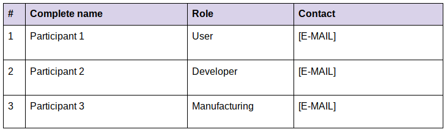
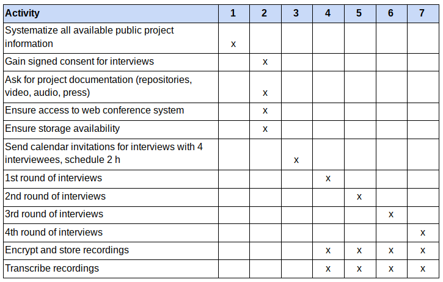

Anexo 3 - Protocolo para estudios de caso
Objectives of case study
[PROJECT NAME] is an initiative that builds [DESCRIPTION OF ARTEFACT]. The goal of this case study is to understand how the PROJECT NAME project is contributing to democratizing science and technology in the global south.
The [ARTEFACT] was developed and used to [PURPOSE OF PROJECT]
The project was originally created at [CONTEXT OF PROJECT, YEAR]
Case study questions, hypothesis, propositions
The main hypothesis in this study is that GOSH constitutes a strategic niche for innovation towards a more democratic knowledge production socio-technical system. The derived hypothesis states that PROJECT NAME contributes to democratizing the production of knowledge in the Global South.

Interviewees and contact information

Data collection plan

Checklist for interviews

Protocol questions
Fields in purple mean data can be obtained through secondary sources like the web or project documentation.
Collect data about which artifact design stages are related to the project. This will organize the rest of the questions.
- Has the project been involved in any of these stages of artifact design? If yes, how?
Collect data on how much the project is aligned with indicators of strategic niche formation.
- Which is the motivation or problem you want to address with this project?
- What do you aim to achieve, which is the vision for your project? Inspirations?
- How do you communicate what you do?
Collect data about the networks the project belongs to and which role it plays in them.
- Which networks are you part of?
Collect data about key intermediaries between the project and other projects in GOSH. What kind of lessons are key intermediaries transmitting?
- Have you engaged with other GOSHers in activities? What for?
Collect data about resources of different types and which is the source for them, is the source sustainable? Are these resources mobilized from the networks mentioned before?
- How do you obtain resources for your activities?
Collect information about the spaces opened by the project and its levels of activity.
- In which areas are you developing your activities, with which frequency?
Collect information about the activities developed by the project and their impact when possible, how these actions help opening spaces?
- Which activities do you develop as part of your work?
Collect information about interactions with institutions, what level of influence (pathway) can the project have in this interaction? Which are the consequences?
- Have you had any contacts with formal science, tech, education, gov institutions? Tell us more about it.
Collect information on diversity of participants and evidence of work towards augmenting it, taking into account those usually underrepresented, or falling into the intersection of bias.
- How do you ensure more and more different people can participate in the project?
Collect evidence of participation of all interviewees in all stages, especially those critical for power implications, like ideation, evaluation of prototypes, selection. In each stage, how are activities perceived as positive and activities perceived as tedious/negative assigned and distributed?
- Which activities have you taken part in each of the stages of the artifact design included in the project?
- What did you do in each stage that you consider motivating and that you don’t consider motivating?
Collect evidence of participants going through processes of technology domestication, including data generation.
- Tell me about your story with the microscope: How was your first contact with it? How you got used to it, how do you feel about it now?
Collect data about the functionings that participants identify as necessary for producing knowledge in the context of PROJECT NAME. Are they similar to the capability set for design? What is the result of the self-assessment?
Which capacities you consider are necessary for running a project like PROJECT NAME? Did you have any trouble acquiring them?
Do you feel you’d be able to replicate it, or generate a new project from what you learned? Why?
Collect evidence of participants level of achievement of the capabilities identified + capability set for design. Classify for each stage and capability, a level of achievement:
- Existence of choice (E): can participants access the information, can they imagine new ideas, can they acquire knowledge, are they able to evaluate, are they able to participate, are they able to exercise authority on their decisions?
- Use of choice (U): do participants access the information, do they imagine new ideas, do they acquire knowledge, do they evaluate, do they participate, do they exercise authority on their decisions?
- Achievement of choice (A): what is the quality of participation when they engage, what are the outcomes of having knowledge, of producing data they are interested in.
- Do you have access to all relevant information of the project? (not only tech specs, decision-making, funding, strategies)
- Do you understand how each part of the PROJECT NAME works and what the data means?
- Has PROJECT NAME inspired you with new ideas for projects?
- What do you think about the environmental, social or economic implications of PROJECT NAME?
- Are you able to discuss your ideas with others within the team and outside?
- Is or was there anything you’d do differently? Have you proposed it?
Tentative outline for the case study report
- PROJECT BACKGROUND
- VISIONS
- SPACES AND STRATEGIES
- INSTITUTIONS
- PARTICIPATION
- ACCESS BARRIERS
- DIVERSITY
- WORK DISTRIBUTION
- DOMESTICATION
- PRACTICAL WORK
- SYMBOLIC WORK
- COGNITIVE WORK
- CAPABILITIES
- VALUED CAPABILITIES
- SCIENCE PROD CAPABILITIES